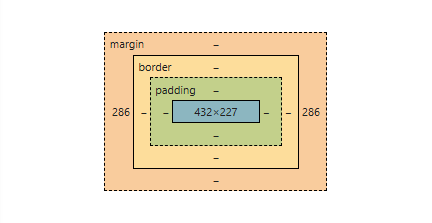
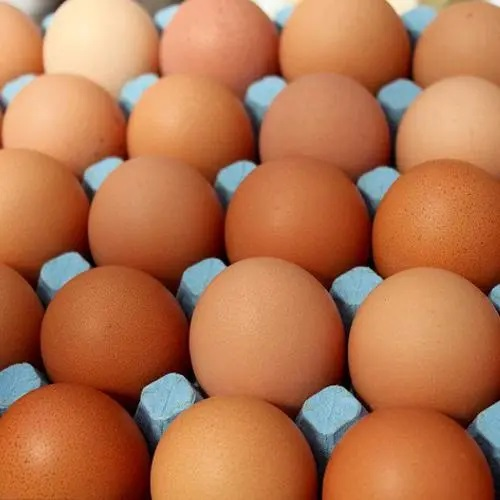
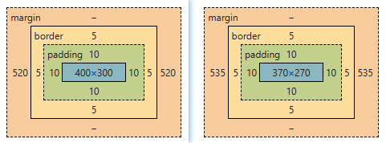

| item | desc |
|---|---|
| width | 元素内容区宽度 |
| height | 元素内容区高度 |
| padding | 元素填充，也称内边距、内填充
可以单独设置元素4个方向的内边距：padding-top | padding-right | padding-bottom | padding-left |
| border | 元素边框
可以单独设置元素4个方向的边框：border-top | border-right | border-bottom | border-left |
| margin | 元素到其它元素之间的距离，也称外边距、外填充、空白
可以单独设置元素4个方向的外边距：margin-top | margin-right | margin-bottom | margin-left； 负边距也有很惊艳的表现 |

对指定了大小的块元素而言，margin: xxx auto;可以使其在父元素盒子内水平方向居中
垂直方向居中需要结合实际情况综合考虑，见后续内容
元素的实际宽度 = width + padding-left + padding-right + border-left + border-right 元素的实际高度 = height + padding-top + padding-bottom + border-top + border-bottom
.box {
width: 400px;
height: 300px;
padding: 10px;
border: 5px solid #ddd;
box-sizing: border-box;//content-box
}
